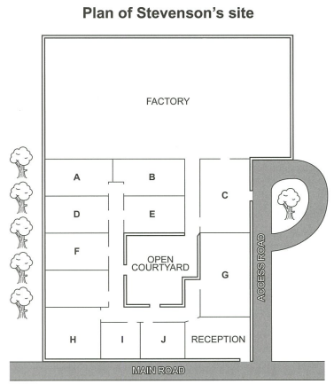

Audioscript
Questions 1–10
Complete the notes below. Write ONE WORD AND/OR A NUMBER for each answer.
Children’s Engineering Workshops
Tiny Engineers (ages 4–5)
- Create a cover for an so they can drop it from a height without breaking it.
- Take part in a competition to build the tallest .
- Make a powered by a balloon.
Junior Engineers (ages 6–8)
- Build model cars, trucks and .
- Take part in a competition to build the longest using card and wood.
- Create a short with special software.
- Build, and program a humanoid robot.
Workshop details
- Held on from 10 am to 11 am.
- Location: Building 10A, Industrial Estate, Grasford.
- Plenty of is available.
Questions 11–14
Choose the correct letter, A, B or C.
11. Stevenson’s was founded in
12. Originally, Stevenson’s manufactured goods for
13. What does the speaker say about the company premises?
14. The programme for the work experience group includes
Questions 15–20
Label the map below. Write the correct letter, A–J, next to Questions 15–20.
(Use the source image as reference while answering.)

Questions 15–20
Questions 21 and 22
Choose TWO letters, A–E.
Which TWO parts of the introductory stage to their art projects do Jess and Tom agree were useful?
Questions 23 and 24
Choose TWO letters, A–E.
In which TWO ways do both Jess and Tom decide to change their proposals?
Questions 25–30
Choose SIX answers from the box and write the correct letter, A–H, next to Questions 25–30.
Each option can be used once only.
25
Falcon (Landseer)
Drop here
26
Fish hawk (Audubon)
Drop here
27
Kingfisher (van Gogh)
Drop here
28
Portrait of William Wells
Drop here
29
Vairumati (Gauguin)
Drop here
30
Portrait of Giovanni de Medici
Drop here
Personal meanings
Aa childhood memory
Bhope for the future
Cfast movement
Da potential threat
Ethe power of colour
Fthe continuity of life
Gprotection of nature
Ha confused attitude to nature
Questions 31–40
Complete the notes below. Write ONE WORD ONLY for each answer.
Stoicism
- Stoicism is still relevant today because of its appeal.
- The Stoics' ideas are surprisingly well known, despite not being intended for .
- Epictetus said that external events cannot be controlled but the people make in response can be controlled.
- A Stoic is someone who has a different view on experiences which others would consider as .
- George Washington organised a about Cato to motivate his men.
- Adam Smith's ideas on were influenced by Stoicism.
- The treatment for is based on ideas from Stoicism.
- People learn to base their thinking on .
- In business, people benefit from Stoicism by identifying obstacles as .
- It requires a lot of but Stoicism can help people to lead a good life.